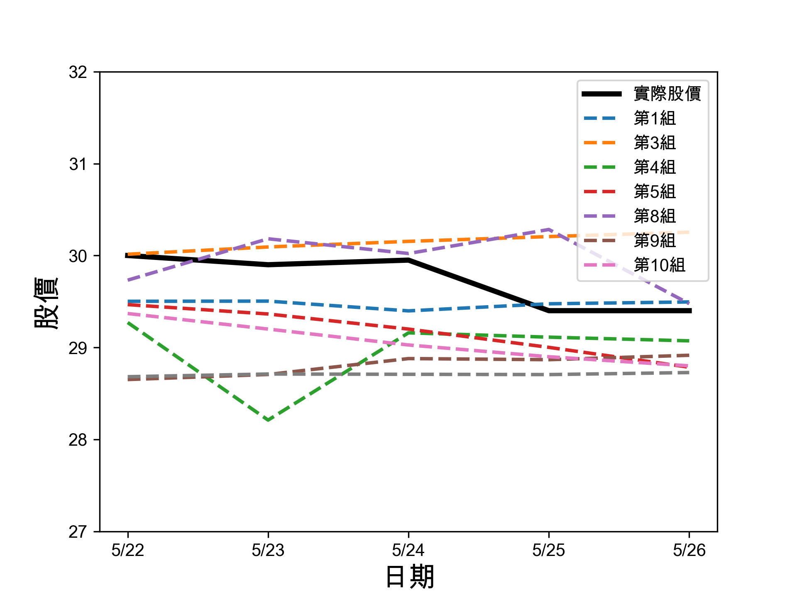
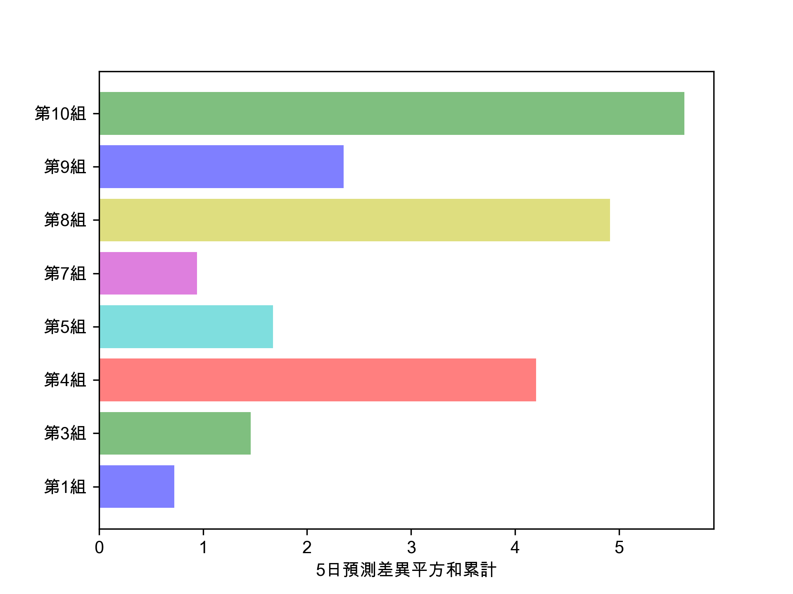

當AI遇上股票
Table of Contents

以下範例均假設於Google Colab上執行，若於本機IDE(如PyCharm、Spyder)上執行，則部份指令執行方式要略做修正。
1. CNN-1: 以AI預測股價-隔日漲跌
1.1. 安裝相關套件
1: pip install yfinance
1.2. 下載股價資訊
1: import yfinance as yf 2: 3: df = yf.Ticker('2330.TW').history(period='10y') 4: print(type(df))
1.2.1. 查看下載的資料集
1: df 2: #print(df[:5])
1.2.2. 取出需要的收盤價
從陣列中讀出收盤價
1: data = df.filter(['Close']) 2: data
1.3. 觀察原始資料/日K圖
1: import matplotlib.pyplot as plt 2: plt.clf() 3: plt.plot(data.Close) 4: plt.show()
1.4. 將資料標準化
1: from sklearn.preprocessing import MinMaxScaler 2: scaler = MinMaxScaler(feature_range=(0, 1)) 3: sc_data = scaler.fit_transform(data.values) 4: 5: sc_data #變成numpy array
1.5. 建立、分割資料
1.5.1. 建立資料集及標籤
1: import numpy as np 2: 3: # 以前N天的股價來預測未來股價 4: previousNDays = 10 5: x_data, y_data = [], [] 6: for i in range(len(sc_data) - previousNDays): 7: x = sc_data[i:i+previousNDays] 8: y = sc_data[i+previousNDays] 9: x_data.append(x) 10: y_data.append(y) 11: #因為等一下要送進tensorflow，所以先轉成numpy的陣列格式 12: x_data, y_data = np.array(x_data), np.array(y_data) 13: 14: print(x_data.shape) 15: print(y_data.shape)
1.5.2. 分割訓練集與測試集
1: ratio = 0.8 2: train_size = round(len(x_data) * ratio) 3: print(train_size) 4: # 第0筆到第train_size-1筆的資料分割為訓練集 5: x_train, y_train = x_data[:train_size], y_data[:train_size] 6: # 第train_size筆到最後一筆的資料分割為測試集 7: x_test, y_test = x_data[train_size:], y_data[train_size:] 8: #from sklearn.model_selection import train_test_split 9: #x_train, x_test, y_train, y_test = train_test_split(x_data, y_data, test_size=0.2) 10: print(x_train.shape) 11: print(y_train.shape) 12: print(x_test.shape) 13: print(y_test.shape)
1.6. 建立、編譯、訓練模型
1.6.1. 建立模型
1: # CNN模型 2: import tensorflow as tf 3: #建構CNN模型 4: model = tf.keras.Sequential() 5: #輸入層/卷積層 6: model.add(tf.keras.layers.Conv2D(filters=512, kernel_size=1, activation='relu', input_shape=(previousNDays,1,1))) 7: #攤平 8: model.add(tf.keras.layers.Flatten()) 9: #全連接層/輸出層 10: model.add(tf.keras.layers.Dense(1, activation='sigmoid'))
1: model.summary()
1.6.2. 編譯模型
1: model.compile(loss='mse', optimizer='adam', metrics=['accuracy'])
1.6.3. 訓練模型
1: model.fit(x_train, y_train, 2: validation_split=0.2, 3: batch_size=200, epochs=20)
1.7. 性能測試
1.7.1. loss
1: score = model.evaluate(x_test, y_test) 2: print('loss:', score[0])
1.7.2. predict
1: predict = model.predict(x_test) 2: predict = scaler.inverse_transform(predict) 3: predict = np.reshape(predict, (predict.size,)) 4: ans = scaler.inverse_transform(y_test) 5: ans = np.reshape(ans, (ans.size,)) 6: print(predict[:3]) 7: print(ans[:3])
1.7.3. plot
1: plt.plot(predict) 2: plt.plot(ans)nnb 3: plt.show()
1.8. 能怎麼胡搞
- 多讀些原始資料
- 用更多特徵值來預測
- 用更多/更少天數來預測
- 變更模型架構
- 變更訓練集:測試集比例
- 增加epoch
2. CNN-2: 以AI預測股價-隔日漲跌
2.1. 安裝相關套件
1: pip install yfinance
2.2. 下載股價資訊
1: import yfinance as yf 2: 3: df = yf.Ticker('2330.TW').history(period='10y') 4: print(type(df))
2.2.1. 查看下載的資料集
1: df 2: #print(df[:5])
2.2.2. 取出需要的特徵值
此次將成交量納入考慮
1: data = df.filter(['Close', 'Volume']) 2: data
2.3. 觀察原始資料/日K圖
1: import matplotlib.pyplot as plt 2: plt.clf() 3: plt.plot(data.Close) 4: plt.show() 5: plt.clf() 6: plt.plot(data.Volume) 7: plt.show()
2.4. 將資料標準化
1: from sklearn.preprocessing import MinMaxScaler 2: scalerX = MinMaxScaler(feature_range=(0, 1)) 3: scalerY = MinMaxScaler(feature_range=(0, 1)) 4: all_x = data[['Volume', 'Close']] 5: all_y = data['Close'] 6: print(all_x.shape) 7: print(all_y.shape) 8: scal_all_x = scalerX.fit_transform(all_x.values) 9: scal_all_y = scalerY.fit_transform(all_y.values.reshape(-1, 1))
2.5. 建立、分割資料
2.5.1. 建立資料集及標籤
1: import numpy as np 2: 3: # 以前N天的股價來預測未來股價 4: previousNDays = 10 5: x_data, y_data = [], [] 6: for i in range(len(scal_all_x) - previousNDays): 7: x = scal_all_x[i:i+previousNDays] 8: y = scal_all_y[i+previousNDays] 9: x_data.append(x) 10: y_data.append(y) 11: #因為等一下要送進tensorflow 12: x_data, y_data = np.array(x_data), np.array(y_data) 13: 14: print(x_data.shape) 15: print(y_data.shape)
2.5.2. 分割訓練集與測試集
1: ratio = 0.8 2: train_size = round(len(x_data) * ratio) 3: print(train_size) 4: x_train, y_train = x_data[:train_size], y_data[:train_size] 5: x_test, y_test = x_data[train_size:], y_data[train_size:] 6: 7: print(x_train.shape) 8: print(y_train.shape) 9: print(x_test.shape) 10: print(y_test.shape)
2.6. 建立、編譯、訓練模型
2.6.1. 建立模型
1: # CNN模型 2: import tensorflow as tf 3: #建構CNN模型 4: model = tf.keras.Sequential() 5: #輸入層/卷積層 6: model.add(tf.keras.layers.Conv2D(filters=512, kernel_size=1, activation='relu', input_shape=(previousNDays,2,1))) 7: #輸入層/卷積層 8: model.add(tf.keras.layers.Conv2D(filters=512, kernel_size=1, activation='relu')) 9: #攤平 10: model.add(tf.keras.layers.Flatten()) 11: #全連接層/輸出層 12: model.add(tf.keras.layers.Dense(1, activation='sigmoid'))
1: model.summary()
2.6.2. 編譯模型
1: model.compile(loss='mse', optimizer='adam', metrics=['accuracy'])
2.6.3. 訓練模型
1: model.fit(x_train, y_train, 2: validation_split=0.2, 3: batch_size=200, epochs=20)
2.7. 性能測試
2.7.1. loss
1: score = model.evaluate(x_test, y_test) 2: print('loss:', score[0])
2.7.2. predict
1: predict = model.predict(x_test) 2: predict = scaler.inverse_transform(predict) 3: predict = np.reshape(predict, (predict.size,)) 4: ans = scaler.inverse_transform(y_test) 5: ans = np.reshape(ans, (ans.size,)) 6: print(predict[:3]) 7: print(ans[:3])
2.7.3. plot
1: plt.plot(predict) 2: plt.plot(ans) 3: plt.show()
2.8. 能怎麼胡搞
- 多讀些原始資料
- 用更多特徵值來預測
- 用更多/更少天數來預測
- 變更模型架構
- 變更訓練集:測試集比例
- 增加epoch
3. 小組成果
1: import matplotlib.pyplot as plt 2: import numpy as np 3: x = ['5/22', '5/23', '5/24','5/25','5/26'] 4: targ = [30, 29.9, 29.95, 29.4, 29.40] 5: gr1 = [29.502, 29.504, 29.398, 29.475, 29.495] 6: gr3 = [30.014, 30.093, 30.154, 30.206, 30.254] 7: gr4 = [29.271, 28.210, 29.159, 29.112, 29.072] 8: gr5 = [29.466, 29.364, 29.200, 29.001, 28.785] 9: gr7 = [29.732, 30.182, 30.022, 30.283, 29.476] 10: gr8 = [28.651, 28.706, 28.879, 28.867, 28.915] 11: gr9 = [29.369, 29.200, 29.027, 28.899, 28.800] 12: gra = [28.682, 28.711, 28.708, 28.705, 28.727] 13: #plt.cla() 14: plt.rcParams['font.sans-serif'] = ['Arial Unicode MS'] # 步驟一（替換系統中的字型，這裡用的是Mac OSX系統） 15: plt.rcParams['axes.unicode_minus'] = False # 步驟二（解決座標軸負數的負號顯示問題） 16: 17: ax = plt.figure().gca() 18: plt.plot(x, targ, color='black',linestyle='-', linewidth=3) 19: plt.plot(x, gr1, linestyle='--', linewidth=2) 20: plt.plot(x, gr3, linestyle='--', linewidth=2) 21: plt.plot(x, gr4, linestyle='--', linewidth=2) 22: plt.plot(x, gr5, linestyle='--', linewidth=2) 23: plt.plot(x, gr7, linestyle='--', linewidth=2) 24: plt.plot(x, gr8, linestyle='--', linewidth=2) 25: plt.plot(x, gr9, linestyle='--', linewidth=2) 26: plt.plot(x, gra, linestyle='--', linewidth=2) 27: #plt.plot(x, targ, color='r', linestyle='--', linewidth=3) 28: 29: plt.xlabel('日期', fontsize=16) 30: plt.ylabel('股價', fontsize=16) 31: plt.legend(['實際股價','第1組','第3組','第4組','第5組','第8組','第9組','第10組']) 32: #plt.xlim(0,21) 33: plt.ylim(27,32) 34: ax.set_xticks(x) 35: plt.savefig('images/pred-result.png', dpi=300) 36: 37: diffs = [sum([(x - y)**2 for x, y in zip(targ, gr1)]), 38: sum([(x - y)**2 for x, y in zip(targ, gr3)]), 39: sum([(x - y)**2 for x, y in zip(targ, gr4)]), 40: sum([(x - y)**2 for x, y in zip(targ, gr5)]), 41: sum([(x - y)**2 for x, y in zip(targ, gr7)]), 42: sum([(x - y)**2 for x, y in zip(targ, gr8)]), 43: sum([(x - y)**2 for x, y in zip(targ, gr9)]), 44: sum([(x - y)**2 for x, y in zip(targ, gra)])] 45: colors = ['b', 'g', 'r', 'c', 'm','y'] 46: grps = ('第1組','第3組','第4組','第5組','第7組','第8組','第9組','第10組') 47: plt.figure() 48: plt.barh(grps, diffs, align='center', color=colors, alpha=0.5) 49: plt.xlabel('5日預測差異平方和累計') 50: plt.savefig('images/pred-result-1.png', dpi=300) 51:

Figure 1: Caption

Figure 2: Caption